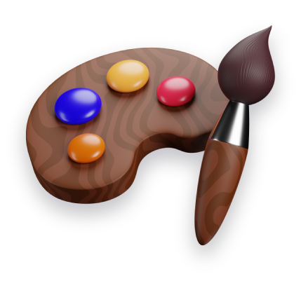

Quote · RFQ 026MB004 · Brand Reputation Campaign
Earn the ride, every day.
Research first, then positioning, then three campaign concepts built to close the gap between how RTD performs and how the region feels about it.

01 · What we heard
Satisfaction is up. Perception has not caught up.
87%
of rail customers satisfied in RTD's 2026 survey
82%
of bus customers satisfied
86%
say RTD is valuable to the region
Trust
the gap reported alongside these gains
What you asked for
A brand reputation campaign: sentiment research, focus groups and benchmarking against other transit agencies, then a positioning and messaging framework and three campaign concepts.
What success looks like
RTD knows exactly why perception lags performance, has one positioning the whole agency can use, and three tested concepts ready to produce.
Sources: RFQ 026MB004 (O'Dwyer's, 19 Nov 2026); RTD 2026 Customer and Community Survey, ETC Institute (released 1 June 2026); CBS Colorado and Denver Gazette coverage of the results.

02 · What the RFP really asks
Three phases, in the right order.
1
Research and assessment
Sentiment research, focus groups and peer benchmarking before any creative.
150 hours2
Positioning and messaging
One clear positioning and a message framework for every audience.
100 hours3
Campaign development
Three distinct campaign concepts, ready for RTD to choose and produce.
225 hours4
Why this order works
Creative built on research is creative the public believes. We keep that order.
We will confirm together in discovery: existing research and survey data · priority audiences and corridors · approval process and decision-makers
03 · Our solution
Listen, frame, create: a campaign the region believes.

Listen
Survey and social sentiment review, focus groups, peer benchmarking.

Frame
Positioning, proof points and a message house by audience.

Create
Three campaign concepts with headlines, key visuals and channel ideas.

Test
Concepts tested with riders and non-riders before RTD chooses.
Riders and non-riders English and Spanish Benchmarked against peer agencies Tested before production
04 · Preliminary concept
Three routes, one promise.
WHAT RIDERS SAY · 2026
87%
rail customers satisfied
86%
say RTD is valuable to the region
Trust gap
what we research first
Route A · ServiceReal people who keep Denver moving, every day.
Route B · ProofVisible, measurable progress, told plainly.
Route C · CommitmentClear promises riders can hold us to.
Preliminary concepts prepared for this proposal, not official RTD material. Final concepts come out of the research phase; survey figures are from RTD's public 2026 results.
05 · Brand presence
Campaigns with a brand world behind them.
Presence, not just a logo
We design every touchpoint a brand needs. For RTD, that standard means concepts that work on a bus wrap, a station poster, a social video and a rider email.
Logo system Palette and type Signage Apparel and merch Packaging Social templates
Concept brands created by TWO&HUMAN to show our art direction and standard of execution. Fictional brands, not client projects.

06 · Scope and deliverables
Everything in the RFQ, in 8 weeks.
Sentiment research
Review of RTD surveys, social and media sentiment, community feedback.
Week 2Focus groups
Riders and non-riders across the district, English and Spanish.
Weeks 2–3Peer benchmarking
How peer transit agencies rebuilt trust: what worked and why.
Week 3Strategic assessment
Findings report and workshop with RTD.
Week 3Positioning and messaging
Positioning statement, proof points, message house by audience.
Week 5Three campaign concepts
Headlines, key visuals, channel ideas and concept testing.
Week 8Assumptions that protect your budget: focus group recruitment and incentives billed at cost · focus groups run online with participants from the RTD district; in-person sessions at a Denver facility available at cost · two revision rounds per deliverable.

07 · Timeline and success measures
Eight weeks, three decisions.
Weeks 1–3
Research and assessment
- Sentiment review
- Focus groups
- Peer benchmarking and workshop
Weeks 4–5
Positioning
- Positioning options
- Message house
- RTD approval
Weeks 6–8
Campaign concepts
- Three concepts
- Testing with riders and non-riders
- Final presentation
Eight weeks from kickoff, within the 120-day period of performance. Mountain Time is 4 hours behind us, so we cover RTD's full morning.
Clear drivers of trust and distrust One approved positioning Three tested concepts Baseline metrics for the campaign
08 · Team and the questions you should ask
Founder-led, and ready for hard questions.
Julio Briones
Co-founder · Strategy and research lead
Single point of contact. Leads the research, positioning and campaign concepts; coordinates deliverables and QA for international marketing clients.
Mariam Neme
Co-founder · Software engineer
Leads data and analysis: survey and sentiment analysis, benchmarking structure and campaign measurement plans.
Established 2026 · Tucumán, Argentina · remote, in English and Spanish · founder-led: the people in this proposal do the work.
How do you know Denver?
By asking Denver. Focus groups recruited across the district, RTD's own survey data and local media coverage are the foundation, not our assumptions.
Can focus groups run remotely?
Yes, online with district residents, which also reaches people who rarely attend in person. In-person sessions are available at cost.
What do we get at the end?
A findings report, an approved positioning and three tested concepts, ready to produce.
Contracts, insurance and payments?
Invoices in U.S. dollars, IRS Form W-8BEN-E as a foreign vendor, and certificates of insurance as required.

09 · Investment (USD)
One fixed price, built on the RFQ's hours.
Research + positioning
$15,000 fixed
Phases 1 and 2 · 250 hours
- Sentiment research
- Focus groups and benchmarking
- Positioning and message house
Recommended
Full scope
$28,500 fixed
Phases 1–3 · 475 hours · 8 weeks
- Everything in Research + positioning
- Three campaign concepts
- Concept testing
- Final presentation
Full scope + launch kit
$34,900 fixed
Phases 1–3 plus launch kit
- Everything in Full scope
- Production-ready assets for the chosen concept
- Launch measurement plan

Concept guarantee. If RTD does not approve any of the three concepts after the agreed revisions, we develop a fourth at no cost.
Full scope: research and assessment 9,000 (150 h) · positioning and messaging 6,000 (100 h) · campaign development 13,500 (225 h). Focus group recruitment and incentives at cost · payments on approved phases · valid 90 days · also entered in RTD's cost form.

10 · Compliance and next steps
Ready to help the region see what RTD delivers.
Sentiment researchYes
Focus groupsYes
Benchmarking vs. peer agenciesYes
Positioning and messagingYes
Three campaign conceptsYes
Cost estimate, 8 weeksYes
Required formsIncluded
InsuranceAs required
1 · Submission
Through RTD's procurement portal.
2 · Interview
A walk-through of the research plan.
3 · Kickoff
Research starts in week 1.
Julio Briones · julio@twoandhuman.com · +54 381 509 8972 · twoandhuman.com